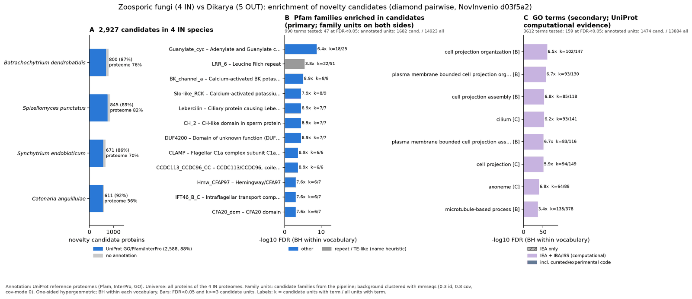

zoosporic dikarya: functional enrichment (novelty)
One-sided hypergeometric test per term; Benjamini-Hochberg FDR within each scope, level and vocabulary. Candidates are the novelty candidates: gene families present in the IN group and absent from the OUT group. Universe: proteome. Background clustered: True (35108 sequences in 24895 clusters, mmseqs easy-cluster --min-seq-id 0.3 -c 0.8). Family level: one unit per candidate family and per background cluster.
Sources: Pfam: 2026-01-27-Pfam38.2; InterPro entries: 110.0; GO: releases/2026-07-26; analysis generated 2026-10-12T12:36:21. Source tables: studies/fungi/zoosporic_dikarya/analysis/enrichment/outputs/proteome_clustered.
Full record: PROVENANCE. Run report: report.html.
- Annotation provenance is not fully recorded: PROVENANCE.yaml lists the per-species annotation files and their checksums, but not the UniProt release they come from.
- GO results are secondary. GO annotations include computational evidence (IEA, IBA); the GO evidence column shows if a term has non-IEA support.
- Candidate families (pipeline clustering of candidates) and background clusters (mmseqs clustering of the background proteome) are made by different runs, so family-level counts are not fully comparable.
Summary figure

Annotation coverage
Fraction of proteins with at least one term per vocabulary. Universe = all proteins of the species; candidates = the candidate set.
| Species | Set | Proteins | Pfam | Pfam clan | InterPro | GO | Any |
|---|---|---|---|---|---|---|---|
| Batrdend | universe | 8610 | 67.6% | 55.3% | 75.4% | 65.8% | 75.8% |
| Batrdend | candidates | 800 | 72.9% | 50.7% | 86.2% | 65.2% | 87.2% |
| Spizpunc | universe | 8940 | 76.5% | 62.5% | 81.4% | 70.2% | 81.9% |
| Spizpunc | candidates | 845 | 77.3% | 51.7% | 88.3% | 65.3% | 89.3% |
| Syncendo | universe | 7895 | 64.0% | 52.2% | 69.5% | 60.8% | 69.9% |
| Syncendo | candidates | 671 | 71.1% | 46.7% | 84.5% | 62.7% | 85.5% |
| Cateangu | universe | 12590 | 48.2% | 39.3% | 55.3% | 45.3% | 55.5% |
| Cateangu | candidates | 611 | 76.9% | 53.0% | 90.7% | 70.2% | 91.8% |
| ALL_IN | universe | 38035 | 62.5% | 51.0% | 68.9% | 59.0% | 69.3% |
| ALL_IN | candidates | 2927 | 74.6% | 50.6% | 87.4% | 65.7% | 88.4% |
Tests summary
Per vocabulary: terms with FDR < 0.05 / terms tested. Protein level counts proteins; family level counts candidate families and background clusters.
| Scope | Level | Cand. units | Pfam sig / tested | Pfam clan sig / tested | InterPro sig / tested | GO sig / tested |
|---|---|---|---|---|---|---|
| whole_set | family | 2284 | 47 / 990 | 20 / 358 | 95 / 2191 | 159 / 3612 |
| whole_set | protein | 2927 | 87 / 1717 | 43 / 420 | 185 / 3850 | 258 / 4419 |
| Batrdend | family | 778 | 1 / 240 | 11 / 199 | 2 / 626 | 58 / 2075 |
| Batrdend | protein | 800 | 6 / 308 | 11 / 214 | 4 / 788 | 66 / 2171 |
| Cateangu | family | 584 | 3 / 264 | 3 / 202 | 7 / 688 | 98 / 1942 |
| Cateangu | protein | 611 | 6 / 351 | 5 / 218 | 15 / 883 | 106 / 2053 |
| Spizpunc | family | 839 | 4 / 360 | 8 / 231 | 5 / 878 | 65 / 2461 |
| Spizpunc | protein | 845 | 4 / 424 | 9 / 244 | 6 / 1025 | 69 / 2575 |
| Syncendo | family | 663 | 1 / 261 | 4 / 199 | 2 / 641 | 60 / 1868 |
| Syncendo | protein | 671 | 1 / 297 | 5 / 213 | 2 / 739 | 60 / 1923 |
Top 25 Pfam terms (whole set, family level)
25 rows shown, ordered by FDR then p-value; 25 have FDR < 0.05 (bold).
| Term | Name | k / N cand. | n / M bg | Fold | FDR (BH) |
|---|---|---|---|---|---|
| PF00211 | Guanylate_cyc: Adenylate and Guanylate cyclase catalytic domain | 18 / 1682 | 25 / 14923 | 6.388 | 1.73e-09 |
| PF13516 | LRR_6: Leucine Rich repeat | 22 / 1682 | 51 / 14923 | 3.827 | 3.65e-06 |
| PF03493 | BK_channel_a: Calcium-activated BK potassium channel alpha subunit | 8 / 1682 | 8 / 14923 | 8.872 | 8.47e-06 |
| PF22614 | Slo-like_RCK: Calcium-activated potassium channel slowpoke-like RCK domain | 8 / 1682 | 9 / 14923 | 7.886 | 3.23e-05 |
| PF06294 | CH_2: CH-like domain in sperm protein | 7 / 1682 | 7 / 14923 | 8.872 | 3.23e-05 |
| PF13863 | DUF4200: Domain of unknown function (DUF4200) | 7 / 1682 | 7 / 14923 | 8.872 | 3.23e-05 |
| PF15619 | Lebercilin: Ciliary protein causing Leber congenital amaurosis disease | 7 / 1682 | 7 / 14923 | 8.872 | 3.23e-05 |
| PF13870 | CCDC113_CCDC96_CC: CCDC113/CCDC96, coiled-coil | 6 / 1682 | 6 / 14923 | 8.872 | 2.24e-04 |
| PF14769 | CLAMP: Flagellar C1a complex subunit C1a-32 | 6 / 1682 | 6 / 14923 | 8.872 | 2.24e-04 |
| PF01547 | SBP_bac_1: Bacterial extracellular solute-binding protein | 6 / 1682 | 7 / 14923 | 7.605 | 9.80e-04 |
| PF05018 | CFA20_dom: CFA20 domain | 6 / 1682 | 7 / 14923 | 7.605 | 9.80e-04 |
| PF12317 | IFT46_B_C: Intraflagellar transport complex B protein 46 C terminal | 6 / 1682 | 7 / 14923 | 7.605 | 9.80e-04 |
| PF13879 | Hmw_CFAP97: Hemingway/CFA97 | 6 / 1682 | 7 / 14923 | 7.605 | 9.80e-04 |
| PF00643 | zf-B_box: B-box zinc finger | 5 / 1682 | 5 / 14923 | 8.872 | 0.001 |
| PF02485 | Branch: Core-2/I-Branching enzyme | 5 / 1682 | 5 / 14923 | 8.872 | 0.001 |
| PF06912 | DUF1275: Protein of unknown function (DUF1275) | 5 / 1682 | 5 / 14923 | 8.872 | 0.001 |
| PF17958 | EF-hand_13: EF-hand domain | 5 / 1682 | 5 / 14923 | 8.872 | 0.001 |
| PF02493 | MORN: MORN repeat | 7 / 1682 | 10 / 14923 | 6.211 | 0.001 |
| PF25555 | RAB3A-like_C: Rabin 8-like C-terminal domain | 7 / 1682 | 10 / 14923 | 6.211 | 0.001 |
| PF21771 | CFAP58_CC: CFAP58 central coiled coil | 6 / 1682 | 8 / 14923 | 6.654 | 0.002 |
| PF22544 | HYDIN_VesB_CFA65-like_Ig: HYDIN/CFA65/VesB-like, Ig-like domain | 6 / 1682 | 8 / 14923 | 6.654 | 0.002 |
| PF07162 | B9-C2: Ciliary basal body-associated, B9 protein | 5 / 1682 | 6 / 14923 | 7.393 | 0.004 |
| PF24762 | TPR_IF140-IFT172: IF140/IFT172 TPR domain | 5 / 1682 | 6 / 14923 | 7.393 | 0.004 |
| PF25972 | At4g15545_C: At4g15545-like, C-terminal domain | 5 / 1682 | 6 / 14923 | 7.393 | 0.004 |
| PF00612 | IQ: IQ calmodulin-binding motif | 12 / 1682 | 32 / 14923 | 3.327 | 0.004 |
Top 25 InterPro terms (whole set, family level)
25 rows shown, ordered by FDR then p-value; 25 have FDR < 0.05 (bold).
| Term | Name | k / N cand. | n / M bg | Fold | FDR (BH) |
|---|---|---|---|---|---|
| IPR001054 | Domain:Adenylyl cyclase class-3/4/guanylyl cyclase | 20 / 1969 | 27 / 16784 | 6.314 | 9.58e-11 |
| IPR029787 | Homologous_superfamily:Nucleotide cyclase | 20 / 1969 | 27 / 16784 | 6.314 | 9.58e-11 |
| IPR001611 | Repeat:Leucine-rich repeat | 48 / 1969 | 151 / 16784 | 2.71 | 3.04e-08 |
| IPR032675 | Homologous_superfamily:Leucine-rich repeat domain superfamily | 69 / 1969 | 292 / 16784 | 2.014 | 3.97e-06 |
| IPR003929 | Domain:Calcium-activated potassium channel BK, alpha subunit | 8 / 1969 | 8 / 16784 | 8.524 | 1.35e-05 |
| IPR047871 | Family:Calcium-activated potassium channel slowpoke-like | 9 / 1969 | 10 / 16784 | 7.672 | 1.35e-05 |
| IPR003148 | Domain:Regulator of K+ conductance, N-terminal lobe | 8 / 1969 | 9 / 16784 | 7.577 | 5.11e-05 |
| IPR010441 | Domain:CH-like domain in sperm protein | 7 / 1969 | 7 / 16784 | 8.524 | 5.11e-05 |
| IPR025252 | Domain:Domain of unknown function DUF4200 | 7 / 1969 | 7 / 16784 | 8.524 | 5.11e-05 |
| IPR026188 | Family:Lebercilin-like | 7 / 1969 | 7 / 16784 | 8.524 | 5.11e-05 |
| IPR028933 | Domain:Lebercilin domain | 7 / 1969 | 7 / 16784 | 8.524 | 5.11e-05 |
| IPR051147 | Family:Cilia- and flagella-associated protein and CCDC | 7 / 1969 | 7 / 16784 | 8.524 | 5.11e-05 |
| IPR051885 | Family:Coiled-coil domain-containing protein involved in ciliogenesis | 7 / 1969 | 7 / 16784 | 8.524 | 5.11e-05 |
| IPR006059 | Family:Bacterial-type extracellular solute-binding protein | 9 / 1969 | 12 / 16784 | 6.393 | 1.02e-04 |
| IPR025254 | Domain:CCDC113/CCDC96, coiled-coil | 6 / 1969 | 6 / 16784 | 8.524 | 3.78e-04 |
| IPR050576 | Family:Ciliary and flagellar integrity-associated protein | 9 / 1969 | 14 / 16784 | 5.48 | 6.52e-04 |
| IPR036028 | Homologous_superfamily:SH3-like domain superfamily | 40 / 1969 | 165 / 16784 | 2.066 | 6.68e-04 |
| IPR013783 | Homologous_superfamily:Immunoglobulin-like fold | 23 / 1969 | 77 / 16784 | 2.546 | 0.001 |
| IPR007714 | Domain:CFA20 domain | 6 / 1969 | 7 / 16784 | 7.306 | 0.001 |
| IPR022088 | Family:Intraflagellar transport complex B protein 46 | 6 / 1969 | 7 / 16784 | 7.306 | 0.001 |
| IPR029488 | Family:Hemingway/CFA97 | 6 / 1969 | 7 / 16784 | 7.306 | 0.001 |
| IPR039902 | Family:Coiled-coil domain-containing protein CCDC148/CCDC112 | 6 / 1969 | 7 / 16784 | 7.306 | 0.001 |
| IPR040441 | Family:Cilia- and flagella-associated protein 20/CFAP20DC | 6 / 1969 | 7 / 16784 | 7.306 | 0.001 |
| IPR051291 | Family:Ciliary Microtubule Associated | 6 / 1969 | 7 / 16784 | 7.306 | 0.001 |
| IPR052111 | Family:Spermatogenesis and Ciliary Microtubule-associated Protein | 6 / 1969 | 7 / 16784 | 7.306 | 0.001 |
Top 15 GO terms (whole set, family level) — secondary, computational evidence (IEA/IBA) included
15 rows shown, ordered by FDR then p-value; 15 have FDR < 0.05 (bold).
| Term | Name | k / N cand. | n / M bg | Fold | FDR (BH) | GO evidence | Families with non-IEA |
|---|---|---|---|---|---|---|---|
| GO:0030030 | biological_process:cell projection organization | 102 / 1474 | 147 / 13884 | 6.536 | 9.14e-62 | has_non_IEA | 33 |
| GO:0044782 | biological_process:cilium organization | 93 / 1474 | 130 / 13884 | 6.738 | 1.88e-58 | has_non_IEA | 32 |
| GO:0120036 | biological_process:plasma membrane bounded cell projection organization | 93 / 1474 | 130 / 13884 | 6.738 | 1.88e-58 | has_non_IEA | 32 |
| GO:0030031 | biological_process:cell projection assembly | 85 / 1474 | 118 / 13884 | 6.785 | 9.60e-54 | has_non_IEA | 30 |
| GO:0005929 | cellular_component:cilium | 93 / 1474 | 141 / 13884 | 6.213 | 1.16e-53 | has_non_IEA | 26 |
| GO:0120025 | cellular_component:plasma membrane bounded cell projection | 93 / 1474 | 142 / 13884 | 6.169 | 2.52e-53 | has_non_IEA | 26 |
| GO:0060271 | biological_process:cilium assembly | 83 / 1474 | 116 / 13884 | 6.74 | 2.44e-52 | has_non_IEA | 29 |
| GO:0120031 | biological_process:plasma membrane bounded cell projection assembly | 83 / 1474 | 116 / 13884 | 6.74 | 2.44e-52 | has_non_IEA | 29 |
| GO:0042995 | cellular_component:cell projection | 94 / 1474 | 149 / 13884 | 5.942 | 6.50e-52 | has_non_IEA | 26 |
| GO:0005930 | cellular_component:axoneme | 64 / 1474 | 88 / 13884 | 6.85 | 8.90e-41 | has_non_IEA | 20 |
| GO:0007017 | biological_process:microtubule-based process | 135 / 1474 | 378 / 13884 | 3.364 | 2.31e-37 | has_non_IEA | 51 |
| GO:0005815 | cellular_component:microtubule organizing center | 88 / 1474 | 197 / 13884 | 4.208 | 2.18e-32 | has_non_IEA | 29 |
| GO:0042073 | biological_process:intraciliary transport | 45 / 1474 | 60 / 13884 | 7.064 | 2.41e-29 | has_non_IEA | 17 |
| GO:0007018 | biological_process:microtubule-based movement | 85 / 1474 | 203 / 13884 | 3.944 | 9.19e-29 | has_non_IEA | 34 |
| GO:0036064 | cellular_component:ciliary basal body | 51 / 1474 | 79 / 13884 | 6.081 | 2.24e-28 | has_non_IEA | 21 |
Actin cytoskeleton controls
Known actin-related families and how many of their proteins pass each filter. Protein ID columns are left out.
| control | pfam_ids | desc_regex | IN_universe | IN_in_matrix | IN_pass_ingroup_rule | candidates | near_miss_out1 | near_miss_out2 | n_Batrdend | n_Spizpunc | n_Syncendo | n_Cateangu | n_Scer | n_Ncra | n_Anid | n_Spom | n_Ccin |
|---|---|---|---|---|---|---|---|---|---|---|---|---|---|---|---|---|---|
| Arp2/3 ARPC2 (P34-Arc) | PF04045 | 4 | 4 | 4 | 0 | 0 | 0 | 1 | 1 | 1 | 1 | 1 | 1 | 1 | 1 | 1 | |
| Arp2/3 ARPC3 (P21-Arc) | PF04062 | 4 | 4 | 4 | 0 | 0 | 0 | 1 | 1 | 1 | 1 | 1 | 1 | 1 | 1 | 1 | |
| Arp2/3 ARPC4 | PF05856 | 4 | 4 | 4 | 0 | 0 | 0 | 1 | 1 | 1 | 1 | 1 | 1 | 1 | 1 | 1 | |
| Arp2/3 ARPC5 (P16-Arc) | PF04699 | 4 | 4 | 4 | 0 | 1 | 0 | 1 | 1 | 1 | 1 | 1 | 1 | 1 | 1 | 1 | |
| Arp2/3 ARPC1 (description only) | arp2/3 complex.*(41|p41|subunit 1)|ARPC1 | 1 | 1 | 1 | 0 | 0 | 0 | 0 | 0 | 1 | 0 | 0 | 0 | 0 | 0 | 0 | |
| Arp2 / Arp3 (description only) | actin-related protein (2|3)\b|\bARP[23]\b | 26 | 26 | 26 | 0 | 1 | 0 | 6 | 6 | 7 | 7 | 7 | 6 | 7 | 7 | 5 | |
| WAVE complex NCKAP1 | PF09735 | 4 | 4 | 4 | 4 | 0 | 0 | 1 | 1 | 1 | 1 | 0 | 0 | 0 | 0 | 0 | |
| WAVE complex CYFIP (FragX_IP) | PF05994 | 4 | 4 | 4 | 4 | 0 | 0 | 1 | 1 | 1 | 1 | 0 | 0 | 0 | 0 | 0 | |
| WAVE complex ABI | PF07815|PF27594 | 0 | 0 | 0 | 0 | 0 | 0 | 0 | 0 | 0 | 0 | 0 | 0 | 0 | 0 | 0 | |
| SCAR/WAVE (SCAR_helical) | PF27569 | 0 | 0 | 0 | 0 | 0 | 0 | 0 | 0 | 0 | 0 | 0 | 0 | 0 | 0 | 0 | |
| WASP family (WH1) | PF00568 | 4 | 4 | 4 | 1 | 0 | 0 | 1 | 1 | 1 | 1 | 1 | 1 | 1 | 1 | 2 | |
| WH2 motif (WASP, WAVE, others) | PF02205 | 6 | 3 | 3 | 0 | 0 | 1 | 3 | 1 | 1 | 1 | 2 | 1 | 3 | 2 | 2 | |
| Formin FH2 | PF02181 | 14 | 14 | 14 | 1 | 3 | 3 | 4 | 4 | 3 | 3 | 2 | 1 | 1 | 3 | 2 | |
| Formin Drf_GBD / Drf_FH3 / Drf_DAD | PF06371|PF06367|PF06345 | 12 | 12 | 11 | 0 | 2 | 2 | 3 | 4 | 2 | 3 | 1 | 2 | 2 | 4 | 3 | |
| Ena/VASP (VASP_tetra) | PF08776 | 0 | 0 | 0 | 0 | 0 | 0 | 0 | 0 | 0 | 0 | 0 | 0 | 0 | 0 | 0 | |
| Coronin (description only) | coronin | 6 | 6 | 6 | 0 | 0 | 0 | 1 | 3 | 1 | 1 | 1 | 1 | 1 | 1 | 1 | |
| Cortactin (HS1_rep) | PF02218 | 1 | 1 | 1 | 1 | 0 | 0 | 0 | 0 | 0 | 1 | 0 | 0 | 0 | 0 | 0 | |
| Myosin 2 tail (Myosin_tail_1) | PF01576 | 3 | 3 | 3 | 0 | 0 | 0 | 1 | 1 | 1 | 0 | 0 | 0 | 0 | 0 | 1 | |
| Myosin head (all myosins) | PF00063 | 30 | 30 | 30 | 0 | 0 | 0 | 7 | 9 | 6 | 8 | 5 | 4 | 5 | 5 | 5 |
Page written by bin/generate_enrichment_page.py.